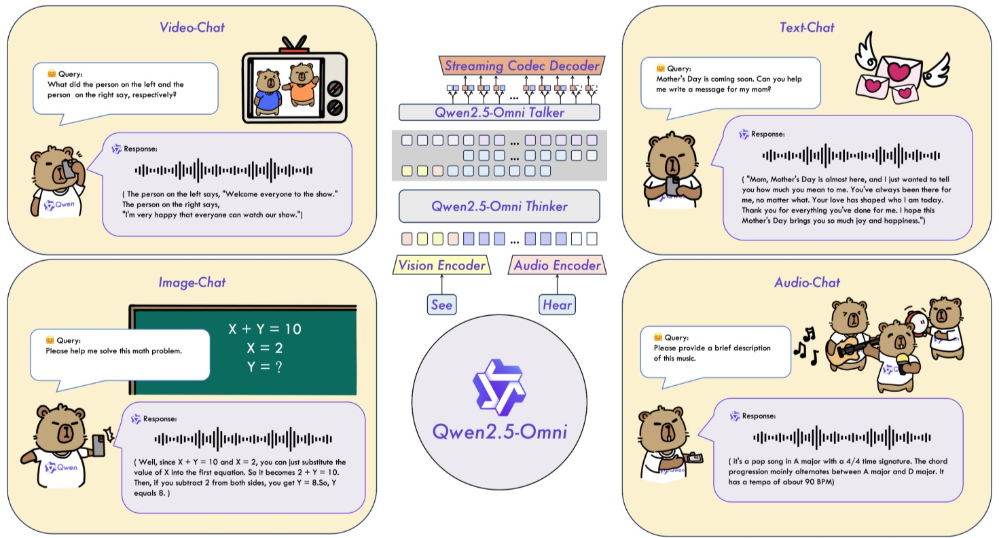

Week 6: Advances in Multimodal NLP#
This lecture examines the latest developments in multimodal NLP based on cutting-edge papers and model architectures as of 2025. We particularly focus on the concept of “Any-to-Any” multimodal models, latest speech technologies, and practical applications utilizing these technologies.
1. “Any-to-Any” Multimodal Models#
“Any-to-Any” multimodal models refer to universal models that can receive various types of inputs (modalities) and generate diverse forms of outputs. For example, if a single model can understand text, images, audio, and video as inputs and generate not only text but also audio or images as responses, it is called an “Any-to-Any” multimodal model. As of 2025, the emergence of these universal multimodal models is transforming the paradigm in the NLP field. In this section, we examine the latest Any-to-Any multimodal models including SmolVLM2, Qwen 2.5 Omni, QVQ-72B (Preview), as well as OpenAI GPT-5, Google Gemini 2.5 Pro, and Anthropic Claude 4.1. We compare the architecture, functionality, performance, limitations, and significance of each model.
SmolVLM2 (256M–2.2B)#
SmolVLM2 is a lightweight multimodal model developed by the Hugging Face research team as the second generation of small vision-language model series. It is provided in three parameter scales: 256M, 500M, and 2.2B, and is efficient enough to run on less than 1GB VRAM. Even the largest 2.2B model can perform video understanding tasks with only 5.2GB VRAM, achieving a level where it can operate on mobile or edge devices.
Architecture: SmolVLM2 uses a structure composed of an image encoder and text decoder. Specifically, it consists of an efficient image encoder called shape-optimized SigLIP and a lightweight language model decoder called SmolLM2. This is a simplified version of the approach used by large-scale VLMs, characterized by reducing the number of tokens for image input and adopting efficient tokenization strategies to improve performance even in small models. It is also designed based on the existing multimodal model architecture called Idefics3, which has a structure that integrates image and text embeddings to generate text. Simply put, it can be viewed as an optimized form of Flamingo-style vision-language combination (image encoder + language generator).
Input/Output and Multimodal Connection: SmolVLM2 can receive text, images, multiple images, and video as arbitrarily combined sequences. For example, videos are processed as continuous frame sequences, and multiple images and text can be input alternately to enable queries like “compare and explain these two.” The output is always generated as text (descriptions, captions, answers, etc.). It does not support generating images or videos themselves, but is specialized for VQA, captioning, etc., which generate text responses to visual information. The multimodal connection structure works by embedding images/video frames through an encoder, then the text decoder generates text by referencing them through cross-attention. SmolVLM2 was trained only on public data, using a total of 3.3 million samples from multiple vision-language instruction datasets including LLaVA, VideoChat, etc. Thanks to training on these multi-modal datasets, it can answer questions about images and videos or generate descriptions.
Key Performance and Features: Despite being a small model, it shows robust performance in complex multimodal tasks. For example, the smallest 256M model achieved higher scores than the 8 billion parameter IDEFICS-80B model in some benchmarks, and the 2.2B model showed performance comparable to some latest large VLMs that use twice the memory. Particularly in problems involving visual information such as MathVista, TextVQA, ScienceQA, it showed significant improvement compared to the first generation SmolVLM, and the 2.2B model achieved 52.1 points in video understanding benchmarks like MLVU, surpassing previous results. Meanwhile, the 256M model, although having lower absolute performance, recorded 32.7 points on MV-Bench, demonstrating decent understanding relative to its parameter count. In summary, SmolVLM2’s achievement is maximizing multimodal performance even in small models through strategic architecture optimization and efficient token reduction. This is significant in that it opens up the possibility of utilizing multimodal AI without large-scale resources.
Contribution to Lightweight and Generalization: Existing large multimodal models (e.g., Flamingo 80B, Idefics 80B, etc.) had excellent performance but required tens of GB of VRAM, making deployment difficult. SmolVLM2 broke through these limitations and showed the possibility of VLMs that can operate on mobile devices. It is particularly emphasized that the 256M model, while operating on less than 1GB memory, achieved results that surpassed 80B models that were 18 months ahead at the time of development. This means it has universal multimodal understanding capabilities while being a lightweight model. By presenting a small model that can process not only static images but also videos, it significantly expanded the application scope of multimodal models. For example, it can be deployed on IoT devices or robots for applications such as real-time video analysis and Q&A.
Usage Example: Below is a simple example code that loads the publicly available SmolVLM2 model using HuggingFace Transformers to perform image-based Q&A (choose between 256M/2.2B models). Since this model was trained in English, it is recommended to input questions in English as well.
# 1. Import necessary libraries
from transformers import AutoProcessor, AutoModelForImageTextToText
import torch
# 2. Load SmolVLM2 model and processor (e.g., 2.2B Instruct model)
model_name = "HuggingFaceTB/SmolVLM2-2.2B-Instruct"
processor = AutoProcessor.from_pretrained(model_name)
model = AutoModelForImageTextToText.from_pretrained(model_name, torch_dtype=torch.bfloat16).to("cuda")
# 3. Input configuration: Prepare image and text query in multimodal conversation format
messages = [
{
"role": "user",
"content": [
{"type": "image", "path": "example.jpg"}, # Image to analyze
{"type": "text", "text": "What is happening in this image?"} # Question about the image
]
}
]
inputs = processor.apply_chat_template(messages, add_generation_prompt=True, return_tensors="pt")
inputs = inputs.to(model.device, dtype=torch.bfloat16)
# 4. Generate answer and output results
output_ids = model.generate(**inputs, max_new_tokens=64)
answer = processor.batch_decode(output_ids, skip_special_tokens=True)[0]
print(answer)
In the above code, we load a processor that can handle both images and text simultaneously through AutoProcessor, and load the model with AutoModelForImageTextToText. Then we configure the image and question as a content sequence to input to the model, and generate text answers with model.generate(). By utilizing SmolVLM2 in this way, we can execute various multimodal Q&A tasks such as descriptions, question answering, and comparisons for given images (or video frames) even in lightweight environments.
Qwen 2.5 Omni#
Qwen 2.5 Omni is an end-to-end multimodal AI model developed by the Qwen team at Alibaba Cloud, with detailed information introduced in technical reports and blogs published in early 2025. Centered around a 7B parameter base language model (Qwen-7B), it can simultaneously process four modal inputs of text, images, audio, and video, and simultaneously stream output both text and natural speech. This is its most distinctive feature. As the name “Omni” suggests, it is essentially a universal model that performs all tasks: “See, Hear, Talk, and Write” in one.
Architecture (Thinker–Talker): Qwen2.5 Omni adopts a dual architecture called Thinker–Talker. Thinker plays the role of the human brain, processing all modal inputs as a large language model (LLM) and generating text responses. Talker corresponds to the speaker, receiving Thinker’s hidden representations and simultaneously generating speech audio tokens through a dual-track (decode dual-track) Transformer decoder. Simply put, it’s a structure that extends one large LM into two output streams (text and audio). The two modules are jointly trained end-to-end and operate simultaneously during inference, with special design to prevent mutual interference. Thanks to this configuration, the model can generate sentences while simultaneously synthesizing the speech for those sentences.
Streaming Multimodal Input Processing: Qwen2.5 Omni was designed with streaming input in mind. Audio and video inputs are processed in small chunk-wise blocks and fed sequentially to Thinker. In particular, a time-aligned positional encoding technique called TMRoPE (Time-aligned Multimodal Rotary Positional Embedding) was proposed to combine video frames and audio chunks into time-axis interleaved sequences while maintaining their positional information without misalignment. For example, if there are 5 seconds of video and audio, they are combined into one sequence alternating every 0.5 seconds, but time alignment is maintained through RoPE-based positional embeddings. This enables understanding of both audio and video flows simultaneously even in real-time multimodal conversations. Text input is also included in the same sequence, and for static images, fixed-length vision encoder output is inserted at the beginning of the sequence. The model internally combines Vision Encoder and Audio Encoder to convert image pixels and audio signals into latent representations, then construct an integrated token sequence that goes into Thinker.
 Qwen2.5-Omni’s Schematic Structure: Vision Encoder and Audio Encoder embed visual input and audio input and pass them to Thinker (LLM), while Thinker generates text responses and simultaneously the Talker module uses Thinker’s representations to generate audio responses (speech) in real-time. This enables simultaneous reading, thinking, and speaking for text, image, audio, and video inputs.
Output and Multimodal Connection: This model’s output is uniquely both text and speech. For example, if a user asks a question with voice and also provides an image, the model generates a text answer through Thinker while simultaneously reading that answer aloud through Talker. Particularly, streaming output is possible, so as soon as a few characters of text are generated for a sentence, the speech for that part is also generated, implementing real-time conversation without delay. Multimodal mode switching is naturally performed by the model itself, operating through special tokens like <Audio> within a sequence to insert speech output (while the internal implementation is complex, conceptually there are “speaking switch” command tokens). Video output or image generation functionality is not available in Qwen2.5 Omni, and the output modality is focused on text and speech.
Key Performance: Qwen2.5 Omni showed comprehensive performance that surpasses single-modal models of the same size. For example, it recorded higher scores than Qwen2-Audio (audio-only model) of the same 7B model size in speech recognition and understanding benchmarks, and showed nearly equivalent visual understanding performance to Qwen2.5-VL-7B (vision-language model). This means that multimodal integrated learning created information synergy compared to individual learning. Also, there was almost no performance degradation for audio input compared to text input, and it was reported that audio Q&A performance was equivalent to text Q&A in academic benchmarks like MMLU, GSM8K. This suggests that users can get GPT-4 level knowledge responses even when asking questions with voice. Meanwhile, it achieved best performance in the same parameter class in multimodal comprehensive evaluation metrics like Omni-Bench, and is evaluated as one of the most outstanding public multimodal chatbots as of 2025. The speech output quality is also excellent, showing naturalness and stability that surpasses most existing streaming/non-streaming TTS by streaming TTS standards. That is, the speech generated through Talker was fluent like a human without noise or distortion, and continuous synthesis without interruption in the middle of sentences was possible.
Contributions: The emergence of Qwen2.5 Omni is evaluated as opening the possibility of truly integrated multimodal AI. Previously, image+text models, audio+text models, etc. existed individually, but integrating all input/output modalities into a single model is an important milestone in this field. In particular, the Thinker–Talker structure is a new approach that simultaneously processes text generation and speech generation in one flow, greatly improving the response delay problem in multimodal conversation systems. Additionally, Qwen2.5 Omni also paid attention to lightweighting and practicalization, and released optimization that reduces VRAM usage to less than half through 4-bit quantization (AWQ) of model weights and module-wise loading/offloading. As a result, this large multimodal model can be run even on RTX 3080 (10GB) class GPUs, approaching a level where it can be deployed not only for research purposes but also for actual application services.
Usage Examples and Open Source: Qwen2.5 Omni’s model and training code are publicly available on Alibaba’s GitHub (QwenLM), and 4-bit quantized intermediate weights are also provided on Hugging Face. However, since the model structure is complex, an extended version of the Transformers library must be installed, and input processing must be done using the provided qwen-omni-utils toolkit. Through the provided example scripts, demos can be run that recognize microphone input audio in real-time and stream output text and speech responses. For example, running the low_VRAM_demo_awq.py script allows experiencing a chat that receives camera video + microphone audio as input and performs text responses on screen along with speech output through speakers. Through these public demos, interesting use cases are confirmed such as conversing with others like video calls, or having the model explain music characteristics when music is played. (Qwen2.5 Omni was mainly trained on Chinese and English data, fluently supporting these two languages, while other languages are limited.)
QVQ-72B (Preview → QVQ-Max)#
QVQ-72B is a super-large visual reasoning (multimodal reasoning) model released as a preview version by the Alibaba Qwen team in late 2024. As the name suggests, it is a 72 billion parameter (72B) scale model, and is an experimental model that greatly enhanced visual reasoning capabilities based on Qwen2-VL-72B (72B vision-language model) from the Qwen series. It was introduced as being developed with the goal of solving complex problems step by step by looking at images like humans. In December 2024, weights were made public (downloadable open-weight), attracting attention as the first super-large visual reasoning model that general researchers could download and use.
Architecture and Multimodal Connection: QVQ-72B was fine-tuned based on the existing large model Qwen2-VL-72B-Instruct. The basic structure is a text-generating Transformer LM with a vision encoder for image input attached. The vision encoder uses a large ViT model from the CLIP family, and the output image embeddings are inserted into the text token sequence so that the language model can process them. Meanwhile, QVQ adopted a training strategy that emphasizes “Think with evidence”, that is, thinking with evidence. When solving complex visual problems, it was fine-tuned to generate step-by-step explanations through Chain-of-Thought (sequential reasoning), showing a tendency to unfold intermediate thinking processes in text rather than giving answers immediately. This aimed to improve performance in mathematics/science areas with many multi-step reasoning problems. In the preview version, some limitations that appeared in this process (e.g., self-repetition or forgetting image information) were pointed out, but the fundamental idea showed the foundation for future multimodal CoT. As input, one or multiple images + text can be provided together, and the output is string-form answers and explanations. For example, if asked to “look at the following physics problem and explain the solution process,” it recognizes the image and generates step-by-step solution processes and final answers all at once.
Key Performance: QVQ-72B (Preview) showed achievements that greatly surpassed previous models in visual reasoning capabilities. It recorded 70.3 points on the MMMU benchmark, a comprehensive multimodal test at the university level, which was a significant improvement over the 64.5 points of the existing model (Qwen2-VL-72B-Instruct) of the same 72B size, and approached the performance of OpenAI’s private model (OpenAI o1) in some questions. Particularly in visual+logical complex problems such as mathematical graphs and formulas (MathVista, etc.), it showed 5-10 points or more improvement compared to the previous generation, and also reduced the SOTA gap with good performance in high-difficulty problem sets like MathVision and OlympiadBench (science olympiad problems). For example, while Qwen2-VL scored only 11.2 points on OlympiadBench, QVQ-72B nearly doubled to 20.4 points, approaching OpenAI o1 (25.9 points). These improvements prove the effectiveness of training specialized for solving complex problems using images. In summary, QVQ is evaluated as a model that elevated AI’s visual reasoning capabilities by one level under the motto of “See the world through images (See)”, “Contemplate through language (Think)”, and “Present conclusions through language (Answer)”.
Update: QVQ-Max Release – In March 2025, QVQ-Max, the successor version of QVQ-72B preview, was officially released. QVQ-Max complements the limitations of its predecessor, supporting simultaneous analysis of multiple images, video clip understanding, improved step-by-step reasoning, etc. For example, it can be used to compare and analyze multiple images or continuously interpret scenes in videos to answer questions. QVQ-Max showed improvements in accuracy and functionality compared to the preview, and through this, the Qwen team showed the possibility of “Think with evidence” AI closer to reality. In high-difficulty multimodal problems like MMMU and MathVision, QVQ-Max achieved higher accuracy than the previous preview, and demonstration results also revealed transparent “thinking” processes that reason through multiple images step by step. Although it’s still the first version, it is evaluated as laying the foundation for the future practicalization of visual CoT reasoning. (Note: In the second half of 2025, Qwen3-Max of the next generation of the Qwen series appeared with 1 trillion parameters, which is a case of further expanding the boundaries of multimodal AI. However, this lecture covers up to the Qwen2.5 generation.)
Limitations and Future Improvements: Several limitations were reported in the preview stage of QVQ-72B. There were issues with language mixing where languages were occasionally mixed in responses (e.g., Chinese sentences inserted in English responses), and cases where recursive reasoning would go in circles without reaching conclusions and repeat verbosely. Also pointed out were insufficient safety measures and the possibility of gradually forgetting image context and producing nonsense during multi-step reasoning. The team announced that they had largely resolved these problems by releasing the QVQ-Max version that improved these issues. Nevertheless, the significance of QVQ-72B preview is great. By making super-large multimodal models public, it allowed researchers to experiment directly, and it presented new benchmarks and evaluation methods that combine image+text+reasoning. For example, datasets like MMMU and MathVista where QVQ achieved high scores became new standards for evaluating visual thinking abilities and became targets for other models thereafter.
Model Usage and Applications: QVQ-72B is difficult to handle directly in general GPU environments due to its very large model size, but Preview weights are available on Hugging Face (downloadable after approval). Also, through Qwen.ai’s demo, online testing can be experienced by uploading simple images and asking questions. In terms of applications, models like QVQ can be deployed for tasks that require humans to use both images and language together, such as scientific problem solving, data visualization interpretation, and geometric reasoning. For example, there is high potential for use in specialized knowledge fields such as understanding and explaining paper figures or reading and interpreting complex mathematical graphs. Although it’s still difficult to trust model outputs at the preview stage, these high-dimensional visual+language reasoning agents are gradually becoming reality through the emergence of improved versions like QVQ-Max.
OpenAI GPT-5#
GPT-5 is a next-generation multimodal large language model (LLM) announced by OpenAI in August 2025. This model, which appeared about a year and a half after GPT-4, is evaluated as having achieved dramatic improvements in all aspects compared to the previous generation. GPT-5 shows SOTA performance in various fields including coding, mathematics, writing, visual understanding, and medical consultation, and is said to have demonstrated human-level or higher task performance capabilities in OpenAI’s internal evaluations. In particular, GPT-5’s biggest change is that it is an integrated system that internalizes “thinking capabilities”.
Architecture (Unified Thinking System): GPT-5 is, in short, not a single model, but an integrated system. Internally, it is known to have a structure that combines two-stage models (lightweight model for fast responses + deep reasoning model) and a real-time router. Basically, a lightweight model responds immediately to simple questions, and when there are difficult problems or requests to “think carefully,” it switches to advanced reasoning mode (GPT-5 Thinking) to calculate more deeply. This structure achieves efficiency by dynamically selecting models according to user queries, responding quickly and at low cost for everyday conversations while investing sufficient computation for complex problems. OpenAI developed technology to combine large and small language models into one product for this purpose, and gradually optimized it by reflecting user feedback (model switching frequency, response preferences, etc.) in router training. In the case of the GPT-5 Pro version, more usage of this deep reasoning mode is allowed, enabling more accurate and comprehensive responses.
Multimodal Input and Understanding: GPT-5 has greatly improved understanding of non-text inputs (unstructured data) compared to GPT-4. While GPT-4 already had some image interpretation capabilities, GPT-5 can analyze images, diagrams, charts, and even short video clips and perform reasoning from them. For example, when given a chart image and asked for a summary, it reads and explains more accurately than GPT-4, and when presentation slide photos are input, its ability to summarize content or answer questions has improved. It also shows strengths compared to GPT-4 in spatial reasoning (e.g., geometric problems) or physical video understanding, recording a high score of 84.2% on multimodal comprehensive benchmarks like MMMU. However, GPT-5 itself remains limited to text output modality. (OpenAI’s speech output functionality is provided through a separate TTS engine, and image generation is performed through tools like DALL-E.) Nevertheless, GPT-5 has greatly increased reasoning accuracy for image inputs and has the ability to understand meaning in continuous frames even in video-based queries, taking one step closer to intelligence that integrates non-verbal information to provide answers.
Enhanced Reasoning and Precision: GPT-5 has strengthened its chain-of-thought utilization capabilities compared to GPT-4. While GPT-4 could also think step by step when given CoT prompts, GPT-5 is said to automatically activate internal “thinking mode” in complex problems even without separate prompts, finding more accurate answers through multiple steps. As a result, it showed achievements that greatly surpassed GPT-4 in mathematics, logic, and science problems. For example, it recorded a new SOTA of 88.4% on the GPQA (General Problem-solving & Question Answering) benchmark, and also achieved 18.8% accuracy on the AIME 2025 medical exam without tools, breaking existing records. Additionally, GPT-5 has improved fact verification and reflection capabilities, with hallucination occurrence rates dropping to less than half compared to GPT-4, and increased frequency of honestly admitting what it doesn’t know. In particular, the problem of making false guesses about visual information-based questions has been improved, with GPT-4(o3) arbitrarily interpreting non-existent images at 86.7% on the CharXiv image-text combination benchmark, while GPT-5 was only 9%. These improvements show that GPT-5 has advanced in honesty and reliability by knowing how to answer “I don’t know if I don’t know”.
Key Performance and Features: GPT-5 showed top-level performance in all fields as of its release. In coding capabilities, it showed significant improvement over GPT-4, producing excellent results in frontend webpage generation and large-scale codebase debugging. Examples have been released of creating complete web apps with a single prompt or generating code that reflects UI design sensibilities. In writing, it can generate more creative and literary texts than GPT-4, with improved ability to maintain consistent writing style in poetry, essays, etc. In specialized areas, it recorded HealthBench scores that surpassed GPT-4 in medical Q&A, providing more accurate and thoughtful responses when giving medical information to users. Despite these enhanced capabilities, OpenAI integrated GPT-5 into the ChatGPT interface and began providing it to Plus users so that anyone can use it. Plus users can use the GPT-5 model as default, but can utilize GPT-5 Pro mode (deep reasoning) within limited usage. In summary, GPT-5 has established itself as the current strongest LLM that adjusts response speed and depth according to the situation, understands more diverse inputs, and generates high-factuality responses.
Contributions and Limitations: GPT-5 opened new horizons for LLMs, but at the same time there are challenges due to increased model complexity. Since it’s a system that integrates multiple sub-models and routers, significant effort is required for development and maintenance, and it’s difficult for general developers to imitate the same approach. Also, GPT-5 has not yet reached the stage of generating all vision-language-speech outputs from a single model. For example, it cannot directly output speech like Qwen2.5 Omni, and image generation is also not integrated. This appears to be a result of OpenAI choosing modularization for model safety and expertise, and attention is being paid to whether integration will be achieved in future versions like GPT-6. Nevertheless, GPT-5’s contributions in multimodal understanding, chain-of-thought reasoning, and factuality improvement have greatly contributed to the practicality enhancement of large models. In fact, after GPT-5’s announcement, cases of expert-level task automation were reported in various industrial fields, showing that the era when AI performs various tasks at human level is rapidly approaching.
Google Gemini 2.5 Pro#
Gemini 2.5 Pro is a next-generation multimodal AI model released by Google DeepMind in March 2025, which became a hot topic for its comprehensive intelligence that surpasses GPT-4. Gemini was originally a multimodal model announced in 2024, and the 2.5 version was released in 2025 with major upgrades. It features Native Multimodality (native multimodal support), 1 million token (context) length context processing, and advanced reasoning (Thinking) capabilities. As the name suggests, Gemini (twin constellation) is a model family that combines two elements – basic language model and reasoning capabilities – and 2.5 Pro is the most powerful version among them.
Architecture and “Thinking” Internalization: According to Google, Gemini 2.5 is classified as a thinking model. This means that the model internally develops its own thinking process before answering questions to produce more accurate results. This functionality is implemented through a technique called “Flash Thinking”, which was introduced in version 2.0 and further improved in 2.5. Although the specific architecture is not disclosed, it is known to vary computation according to task difficulty through methods such as additional token issuance for reasoning or self-allocation of computational budget. It also supports ultra-large context (up to 1 million tokens), enabling comprehensive analysis by inputting long documents or complex datasets into the model at once. For example, if you input a hundreds-page report along with related images, tables, etc. at once and make a query, Gemini 2.5 can generate answers by referencing all of them. This massive context + self-reasoning combination is a unique strength of Gemini that has no precedent in any other model currently.
Input and Multimodal Processing: Gemini 2.5 is designed to natively understand various inputs including text, images, audio (speech), video, and code. “Native” means that the model itself processes this information without separate tools. In fact, the development team stated that Gemini 2.5 has improved speech recognition accuracy over Whisper and enhanced image understanding capabilities. From the user’s perspective, they can interact simply by asking questions with voice or showing images, just like having a conversation with a human. For example, if you ask “(voice) What kind of bird is in this photo?”, Gemini converts the voice to text and analyzes the image to answer the bird species. Since all these processes occur within the end-to-end model, response speed and accuracy are excellent. Output modality is basically text, but Google has provided a pilot Flash (Image) feature that links Gemini with generative models like Imagen to enable image generation responses. Through this, if you ask Gemini to “draw a picture describing the scene,” Gemini internally understands the request and can generate an image through Imagen to return the result. (This feature is limitedly released as Vertex AI’s Flash Image Preview.) While speech output is not yet provided by default, text↔speech conversation is also possible by integrating Gemini with Google Assistant and connecting it to a TTS engine. In summary, Gemini 2.5 can be said to be a model that has almost realized Any-to-Any at the input stage.
Key Performance: Gemini 2.5 Pro swept first place in multiple benchmarks upon its appearance. It recorded first place by defeating GPT-4 and others by a large margin in LMArena, a comprehensive evaluation based on human preferences, and achieved SOTA scores in mathematics and science problems (AIME 2025, etc.) without prior voting (majority voting). It also scored 18.8% on Humanity’s Last Exam, a difficult knowledge test, taking first place (among models without tools). Coding performance also improved dramatically compared to 2.0, recording 63.8% on SWE-Bench Verified, a representative agent coding evaluation. This is a result that surpasses contemporary models like OpenAI GPT-4.5 or Anthropic Claude 3.7. Overall, Gemini 2.5 excels in the ability to integrate heterogeneous information sources to solve complex problems, with strengths in code, reasoning, and science areas. Google emphasized that Gemini 2.5 generates “high-quality style responses”, meaning it excels not only in getting correct answers but also in sentence expressiveness and sophistication. In actual user reviews, many cases highly evaluate Gemini responses’ writing style or explanation friendliness compared to GPT-4.
Significance and Accessibility: Gemini 2.5 can be said to be a culmination that comprehensively integrates and fuses multimodal technologies (e.g., image models, speech models, translation, etc.) that Google has accumulated over a long period. This model has laid the foundation for AI to act by considering massive knowledge bases + complex environments at once by processing both 1M token context and multi-modal inputs. For example, it has become possible to perform tasks that require long-term context understanding and visual information combination with a single model, such as reading hundreds of pages of documents while simultaneously analyzing related figures and tables for Q&A. This is expected to bring great innovation to future specialized domains (legal document review, research paper analysis, etc.) or conversational agent (user guide AI) development. Google provides Gemini 2.5 Pro as an API through the Vertex AI platform, and has made it available for developers and users to test directly on Google AI Studio and Gemini app (gemini.google.com). Pricing policies have also been disclosed to prepare for enterprises to use it scalably. However, Gemini 2.5’s own model weights are not disclosed, and specific parameter counts or training data remain confidential. Nevertheless, Gemini 2.5’s release has also stimulated the open ecosystem, becoming an opportunity for the competitive landscape of large LLMs to rapidly evolve toward multimodal+ultra-long context+high-dimensional reasoning.
Anthropic Claude 4.1#
Claude 4 is a latest generation LLM announced by Anthropic in mid-2025, showing excellent performance particularly in coding and agentic tasks. Claude 4 is internally provided as two models: Claude Opus 4 and Claude Sonnet 4. Opus 4 is a high-performance mode, and Sonnet 4 is a lightweight/fast mode, adopting a structure that separates fast response and deep reasoning similar to OpenAI’s GPT-5. Claude 4.1 is a minor upgrade version of Opus 4 released in August 2025, with improvements in multi-file coding, agent reasoning, and detailed search capabilities.
Model Configuration and “Extended Thinking”: The Claude 4 series is called a hybrid model. This is an approach that switches between immediate response mode and extended thinking mode according to user requests to produce optimal results. Claude Opus 4 is designed to proceed with continuous work over several hours without interruption, enabling it to persistently solve problems requiring thousands of steps. For example, there are reports that Opus 4 independently performed code refactoring for over 7 hours while maintaining steady performance. The key to making this possible is extended context memory and tool usage. Claude 4 models can handle 100K+ token contexts (Claude 2 already had 100K), and when developers allow file access, they can create local memory files to store/reference necessary information. Additionally, tool usage capabilities have been greatly enhanced, enabling parallel use of tools like web search or code execution, and self-planning and execution even in multi-step tasks. Anthropic introduced a “thinking summary” feature for this purpose, where a small model summarizes intermediate thoughts when reasoning steps become too long. Through these mechanisms, Claude 4 shows sufficient self-reasoning for most problems but summarizes only when necessary to maintain efficiency. In summary, Claude 4 is a model that has evolved to be suitable for large-scale multi-step tasks by technically solving the long-term reasoning stability problem of LLMs.
Agent and Coding Specialization: The point emphasized during Claude 4’s announcement was top performance in the coding field. In particular, Opus 4 recorded first place with 72.5% on SWE-Bench (large-scale software engineering tasks) and also led with 43.2% on Terminal-Bench (terminal task execution). This is a result that surpasses scores of GPT-4 and others. Claude is strong in complex multi-file code modification and refactoring, with developer feedback that it achieves accurate modifications with minimal bugs. Sonnet 4 also shows excellent performance with 72.7% on SWE-Bench despite being a small model, and GitHub announced that it will utilize this for next-generation Copilot agents. Additionally, Claude 4 excels in Agentic tasks – for example, achieving goals using external tools. Anthropic provided tools like web browser and file editing as APIs along with Claude 4’s release, and Claude successfully solved complex problems by using them in parallel. For example, Claude 4 autonomously handled tasks by utilizing multiple tools in one scenario, such as finding information from the web according to given rules, recording it in local files, and executing terminal commands when necessary. These capabilities have been immediately applied to enterprise AI assistant or automation agent development, and MS Copilot Studio and others are also integrating Claude 4 for various workflows.
Multimodal Elements: Anthropic Claude 4 was mainly released as a text-based model, but internal evaluations also included multimodal learning metrics like MMMLU, MMMU. This suggests that Claude can process images, etc. through tools. In actual Claude 4 Extended Thinking mode, it is said to have performed functions like chart understanding or text extraction from images by linking image captioning models or OCR. For example, if you ask Claude 4 to “analyze the attached chart,” Claude calls a pre-given image description API to get the content and reasons based on that text. This modular multimodal processing is a similar approach to the GPT-4 Plugin system, enabling Claude to utilize visual information by cooperating with external tools even though Claude itself cannot understand image vectors. Therefore, while Claude 4 is not native multimodal integration like Qwen or GPT-5, it can be viewed as supporting multimodal problem solving from a practical perspective. It has not been disclosed whether Anthropic will release a version combined with its own Vision model in the future, but until the end of 2025, Claude appears to focus on text and code.
Key Performance: Claude 4.1 (based on Opus 4.1) has led the industry by raising coding accuracy to 74.5% (SWE-Bench) and strengthening situation tracking and detailed search capabilities. In particular, it shows precision in modifying only necessary parts in large-scale codebases without making unnecessary changes, with feedback that large enterprise development teams prefer it for practical debugging. Also in complex data analysis, the detail tracking ability to find key points without missing anything from given documents or tables has improved. According to Anthropic’s internal benchmarks, Claude 4.1 has significantly improved overall capabilities compared to Claude 3.7, and particularly cheating by finding shortcuts in multi-step reasoning has decreased by 65%. This means the model has suppressed the tendency to construct answers through shortcuts rather than solving problems sincerely, contributing to providing solutions that users can trust. Claude 4 also shows progress in model consistency and safety, showing high compliance rates with Anthropic’s set hunting values (harmful speech suppression, etc.). However, Claude 4.1 also has knowledge gaps due to limitations in training data compared to GPT-5 or Gemini 2.5, and is limited in directly handling image or audio information. Nevertheless, it is gaining attention in enterprise applications through strengths such as 100k+ context long-term memory, excellent tool integration, and high-quality code output. In fact, in the second half of 2025, cases of Claude 4 being integrated into major platforms like MS 365 Copilot and Xcode to increase work productivity are increasing.
Accessibility and Openness: Claude 4 can be experienced by general users through claude.ai and is also provided as an API. In particular, Claude 4.1 is deployed on Amazon Bedrock and Google Cloud Vertex AI, enabling developers to easily integrate it into their infrastructure. Pricing is set at Opus 4 \(15 input / \)75 output per million tokens, Sonnet 4 \(3 input / \)15 output, similar to GPT-4 levels. While Anthropic has not disclosed model weights, it has given some access rights to research partners to proceed with collaboration. It has also announced a responsible scaling policy, transparently disclosing safety checks during model upgrades at regular intervals. These efforts are evaluated as exemplary cases for reliably deploying large models. In summary, Claude 4.1 is a model that continues innovation at the midpoint between open source and closed models and greatly contributes to the practicalization of multimodal AI.
Model Comparison Summary: The table below compares and summarizes the characteristics of the major models introduced above.
Model |
Parameter Scale |
Supported Input Modalities |
Output Modality |
Architecture Features |
Key Performance and Contributions |
|---|---|---|---|---|---|
SmolVLM2 |
256M / 500M / 2.2B |
Text, Images, Multiple Images, Video |
Text (Description/Response Generation) |
Lightweight VLM based on IDEFICS3. SigLIP Image Encoder + SmolLM2 Decoder (Enc-Dec structure). Applied optimization strategy that dramatically reduces image token count |
Small VLM operating on 1GB VRAM. 256M model proved superior performance to 80B model in some areas, 2.2B model equivalent to SOTA VLM using 2x memory. Extended to video understanding, presenting on-device multimodal AI possibilities |
Qwen 2.5 Omni |
~7B (Text LLM based) |
Text, Images, Audio (Speech), Video (Real-time Streaming) |
Text + Speech (Simultaneous Output) |
Thinker–Talker dual structure. TMRoPE for time-synchronized multimodal sequencing. Dual decoder for simultaneous text·speech generation |
First LMM for simultaneous text+speech generation. Equal speech-text knowledge response performance, best performance in same class on Omni-bench, etc. Overall performance improvement through multimodal learning compared to single-modal models of same class. Real-time multimodal interaction implementation |
QVQ-72B (Preview) |
~72B |
Text + Images (Multi-image support), |
Text (Answers + Reasoning Process) |
Super-large Vision-LM based on Qwen2-VL-72B. Multimodal Chain-of-Thought reasoning specialization (step-by-step thinking explanation) |
Largest scale visual reasoning LM made public (2024). Great improvement over previous generation with MMMU 70.3 points, SOTA approach in high-difficulty math/science problems like MathVision. Pioneered new path of multimodal reasoning for complex problem solving with images |
OpenAI GPT-5 |
Undisclosed (Hundreds~Trillions+ estimated) |
Text, Images (Photos, Charts), Video (Frame-based) |
Text (ChatGPT Response) |
Unified Thinking dual system. Lightweight response model + deep reasoning model + real-time router integration. 2-stage “thinking” internalization |
Comprehensive intelligence improvement over GPT-4. Increased multimodal understanding (image/video) accuracy, reduced hallucinations and improved honesty in reasoning. SOTA in coding·writing·medical and other fields. Practical AI implementation that adjusts fast response vs deep thinking according to usage context |
Google Gemini 2.5 Pro |
Undisclosed (Hundreds of billions+? Mixture design) |
Text, Images, Audio, Video, Code |
Text (Image generation possible through Vertex integration) |
Native Multimodality supporting integrated LM. Flash Thinking technique for internal reasoning time allocation. Ultra-long context and diverse input simultaneous processing |
Surpassed GPT-4.5 level with LMArena 1st place, etc. SOTA on AIME/GPQA, SWE-Bench 63.8%. Excellent complex information integration analysis of text·speech·images, etc. Long text+multimodal problem solving capability with 1 million token context |
Anthropic Claude 4.1 |
Undisclosed (Hundreds of billions+ estimated) |
Text (Image/OCR possible through tool usage) |
Text (Response, Code, Agent Actions) |
Hybrid Reasoning model. Opus (High Performance) + Sonnet (Fast Response) 2 types. Extended Thinking with 100k+ context, multiple tool usage |
Coding SOTA (SWE 74.5%) and long-term agent task specialization. Precise multi-file editing·debugging execution. Complex task solving through parallel tools like web search. LLM with high practical applicability through stable long-term reasoning and 100k context |
2. Speech Integration Technology#
Second, we examine the latest trends in the fusion of natural language processing and speech technology. In multimodal NLP, speech is an important axis, where speech recognition (ASR) and speech synthesis (TTS) technologies are combined with language models to open new possibilities. In 2025, commercial-grade performance speech models have emerged even in the open source community, and large AI models have also begun integrating speech. Here, we focus on Voxtral, a latest speech recognition model, and Orpheus, a latest zero-shot TTS model. We examine what improvements each has brought compared to OpenAI’s Whisper (ASR field) and existing TTS, their structure and performance, and open source utilization cases. Additionally, we briefly touch on related trends such as ChatGPT’s speech input/output and Meta’s SeamlessM4T.
Voxtral: Next-Generation Speech Recognition and Understanding#
Voxtral is a high-performance open source speech recognition model series released by Mistral AI in 2025. It was developed to surpass open ASR models represented by Whisper-large-v2, and released two versions under Apache 2.0 license: 2.4 billion parameters (Voxtral Small 2.4B) and 3 billion parameters (Voxtral Mini 3B). Voxtral’s goal was to create a speech intelligence platform that not only has excellent multilingual speech recognition accuracy but also native speech understanding capabilities.
Features Compared to Whisper: The core that distinguishes Voxtral from existing ASR like Whisper is its seamless multimodal integrated design. While Whisper is a pure speech→text converter, Voxtral includes a language model backbone (lightweight LLM based on Mistral 7B) internally, enabling understanding and post-processing of speech input all at once. For this purpose, an architectural technique that balances audio embeddings and text embeddings was introduced. By adding an audio adapter layer, the originally vast information-rich speech feature vectors are downsampled to adjust to a length similar to text token sequences. This enables balanced learning when processing speech and text together within a single Transformer, with effects of reducing memory usage and inference latency. In pretraining, two parallel patterns were mixed for learning: first, classical 〈speech → corresponding text〉 pairs to learn accurate speech-text mapping, and second, cross-modal continuation patterns using the strategy of attaching unrelated text after speech (e.g., speech A1 followed by completely different text T2, then speech A3 followed by text T4). The latter simulates natural flows where speech and text alternate in conversation or Q&A situations, helping the model perform speech→text→speech reasoning while maintaining context. Thanks to these architectural/learning improvements, Voxtral shows greatly advanced multimodal reasoning capabilities and language understanding abilities compared to Whisper. For example, while Whisper can only perform simple “transcription as heard,”, Voxtral can understand speech to summarize or directly answer questions. It even supports function calling through voice, implementing voice→action functionality where it listens to user voice commands and immediately executes API functions (e.g., hearing “turn off the lights” and calling the turn_off(light) function).
Performance (Compared to Whisper): According to Mistral AI’s benchmarks, Voxtral generally outperforms Whisper Large-v2 in speech recognition accuracy (WER). For English speech, it recorded SOTA-level low WER on refined reading speech like Librispeech, and achieved SOTA WER for major languages including English, French, German in Mozilla Common Voice multilingual evaluation. Voxtral Small (2.4B) even showed performance equivalent to ElevenLabs’ commercial model Scribe while being less than half the operational cost as an open source model. It also outperformed Whisper in almost all languages in the FLEURS multilingual evaluation, showing robust results even in non-European languages like Hindi and Arabic, demonstrating strengths in multilingual support. Beyond simple ASR, Voxtral also self-evaluated Audio QA (speech question-answering) and Audio Captioning (audio description) tasks, achieving top-tier scores comparable to GPT-4 Open-type small models or Google Gemini 2.5. It also achieved SOTA in speech→speech translation, showing excellence in applications such as translating English speech to French speech. (Similar to Meta’s SeamlessM4T, this confirms the direction of covering speech, text, and translation with a single model.)
Open Source Usage Cases: One reason Voxtral is attracting attention is the combination of “open source + commercial-grade performance”. Developers can download Voxtral Small and Mini model weights through Hugging Face for direct use, or utilize Mistral’s API. The Voxtral API operates as a Transcribe optimized version, significantly reducing costs and latency. As an example application, there is a smart home control demo released by Baseten. In this demo, the Voxtral Mini model is deployed on a server, and when a user speaks “turn on the living room light and set the temperature to 22 degrees,” Voxtral not only recognizes it as a text command but also parses the intent to generate function calls like turn_on(light) and set_thermostat(22). The backend executes these functions to control a virtual smart home environment and reflects the results in real-time on a 3D virtual house in the web interface. This entire process is accomplished in a single Voxtral inference step, and the key is that it is implemented as a single model rather than a complex pipeline like Whisper’s “ASR → LLM → tool execution”. These cases demonstrate Voxtral’s potential for comprehensive speech interfaces. Voxtral can also be used for various applications such as real-time meeting recording summarization, multilingual call center consultation classification, and automated vehicle assistants. Developers can easily use speech→text functionality by utilizing Transformers’ pipeline(“automatic-speech-recognition”, model=”mistralai/Voxtral-Mini-3B”), and speech+prompt mixed input is also supported, such as performing Q&A in “<|user|> … <|assistant|>” format by providing additional prompts. Below is a simple example of loading Voxtral Mini 3B through Hugging Face pipeline to convert speech to text:
# 1. Import necessary libraries
import torch
from transformers import pipeline
# 2. Load Voxtral Mini ASR pipeline (HF model card approval required)
asr = pipeline("automatic-speech-recognition", model="mistralai/Voxtral-Mini-3B", device=0)
# 3. Convert speech file to text
result = asr("speech_question.wav")
# 4. Output recognized text
print(result["text"])
In the above example, when Korean audio “speech_question.wav” is provided as input, it is converted to Korean text through automatic language detection (Voxtral can recognize Korean to some extent, but since it’s not an optimized language, performance may be limited). Thanks to Voxtral’s 32k token context, it can process up to 30-40 minutes of audio at once, and long recordings can be processed in chunks by adjusting pipeline parameters like chunk_length_s. Additionally, the asr() result provides not only simple text but also information like word-level timestamps, making it useful for future subtitle generation or partial editing. Voxtral has thus greatly increased accessibility and usability of speech data as a developer-friendly open model.
Orpheus: Evolution of Zero-Shot Text-to-Speech (TTS)#
Orpheus is a high-quality open source TTS system announced by Canopy AI Labs in late 2024, particularly attracting attention for its zero-shot speaker cloning capabilities. Orpheus is equipped with a Speech-LLM architecture that applies a 3 billion parameter language model based on Llama 2, which directly generates human-like natural speech waveforms when text is input, just as a language model generates sentences. Despite being a lightweight (3B) model, it has excellent audio quality and boasts low latency that enables real-time inference. Most importantly, with just a few seconds of speech samples, it can immediately mimic new speaker voice characteristics without separate training (zero-shot), enabling instant TTS with various voices.
Implementation Method: The internal structure of Orpheus TTS is a language model that generates text→audio token sequences. Similar to the approach introduced by OpenAI’s VALL-E, it quantizes speech into digital code tokens using Neural Audio Codec (e.g., Meta EnCodec), and the model autoregressively predicts and generates these token sequences to ultimately synthesize speech waveforms. Orpheus is said to utilize an open source neural codec called Snack to establish a token system that represents 24kHz high-quality audio. To apply speaker characteristics in zero-shot, it uses a method of including reference speech codec tokens as prompts in the model input. For example, when the model is inferred with input like “<voice_ref>…
…”, the output audio tokens generate speech that contains the content of the text while having the voice characteristics of the reference speaker. Thanks to this prompt method, it can mimic any speaker’s voice without separate fine-tuning. Additionally, Orpheus introduced special control tokens to make emotion and speech style adjustable. For example, inserting or tags in the middle of sentences synthesizes with joyful or sad intonation, and tags like , can express speaking speed or laughter. These features are useful for emotion-imbued speech synthesis or character acting. Audio Quality and Speaker Preservation Performance: After its release, Orpheus received community evaluation as “the highest level of natural synthetic speech currently available”. The model card claims to implement “intonation, emotion, and rhythm that are difficult to distinguish from humans” and asserts it is superior to commercial closed models. There are reports that it achieved high naturalness scores in the 4-point range out of 5 in actual users’ Mean Opinion Score evaluations. In terms of speaker characteristic preservation, it has been shown to clone voices quite well, maintaining timbre, tone, and speech habits even with just about 5 seconds of speech. For example, when a 5-second speech sample of a celebrity is played and then an arbitrary sentence is synthesized, it reproduces their characteristic speech patterns and intonation, creating amazement. Multilingual support is also a strength, covering over 50 languages besides English, with natural pronunciation for each language. An interesting point is that with just one speaker’s voice sample, it can synthesize sentences in other languages with that speaker’s voice. For example, it has successfully demonstrated cloning a Korean voice actor’s voice to speak English lines in that voice, or conversely, speaking Korean with an English speaker’s voice. This appears to be because Orpheus separately learned speaker timbre and inter-language pronunciation information through multilingual data.
Real-time and Lightweight Synthesis: The Orpheus 3B model achieved streaming synthesis with latency of approximately 200ms or less. This means it can generate and output a sentence in near real-time. It has been shown that response within 100ms is also possible when input text is fed in a streaming manner. Since the model size is small at 3 billion parameters, the possibility of lightweight inference on CPU or mobile devices without high-end GPUs is being explored. In fact, attempts are underway to synthesize at 1x speed or faster without GPU through the Orpheus.cpp project. Such optimization is useful in real-time interactive media such as live broadcasting and games. For example, it can implement features where game characters immediately respond with voice to player actions, or where chat content during live streaming is read aloud in real-time by AI character voices.
Application Possibilities: Orpheus has very diverse application fields. First, in the audiobook/content production field, it can synthesize different voices for various characters. Without needing one voice actor to produce multiple voices, Orpheus can handle diverse voices and emotional acting to produce audiobooks and dramas. Second, it can be utilized in educational content for multilingual voice narration or real-time Q&A guidance. For example, synthesizing English lectures into Korean for provision, or having an AI teacher voice respond when children ask questions in learning apps. Third, in the marketing and advertising field, brand-exclusive voices can be created and used. Corporate mascot voices can be produced with Orpheus and used consistently in call centers, promotional videos, etc., or emotional AI voices can appeal to listeners in advertisements. Fourth, in games and virtual worlds, it can mass-generate NPC character voices or convert players’ voice chat. Through real-time synthesis, game characters can speak dialogue and interact, or it can be applied to anonymize players’ voices and deliver them in different voices. Fifth, in the virtual assistant/AI avatar field, it provides personalized voices. It can implement assistant voices modeled after users’ family members or celebrities, or avatars that respond in the user’s own voice. All these applications are being realized thanks to Orpheus’s zero-shot voice cloning and emotion control features.
Open Source Usage and Ethics: Orpheus TTS has its source code (canopyAI/Orpheus-TTS) and training weights publicly available on GitHub, and can be downloaded from Hugging Face after approval. Orpheus demos can also be run on Hugging Face Spaces, and Colab notebooks are provided for easy testing. However, due to the potential for misuse of speech synthesis, when using Orpheus, ethical guidelines must be strictly followed to prevent voice theft or fraud. Model access requires agreement to terms of use, with conditions such as prohibition of synthesizing others’ voices without consent clearly stated. This is a measure conscious of the double-edged sword of powerful voice cloning technology. Under these constraints, researchers and developers continue experiments using Orpheus for speech generation that is difficult to distinguish from real people, and the community continues to make improvements (e.g., larger model versions, noise processing, etc.).
3. Application Cases and Practice: Multimodal QA Application#
In this section, we cover a practical application case that comprehensively utilizes the technologies introduced earlier: a “multimodal QA system that asks questions with voice and responds with images and text”. This is a project presented as Assignment 2 for Week 6, which involves developing a QA application that combines speech input and image+text output. Users speak questions into a microphone, and the system provides answers to those questions by explaining in text while also generating related images to show. Through such a system, we can directly implement a pipeline of speech recognition + language understanding + visual generation. The practice utilizes Hugging Face’s Transformers and Diffusers libraries, and we will examine the code step by step from simple model loading to input configuration, response generation, and final result visualization.
Application Overview#
The scenario of the multimodal QA application is as follows:
User Input: Speech Question (natural language questions input as audio through microphone, etc.).
System Processing Steps:
Speech Recognition (ASR): Convert input speech to text questions. (e.g., utilizing models like Whisper large-v2 or Voxtral)
Natural Language Question Answering (QA): Generate text answers to converted text questions using language models. (e.g., utilizing knowledge-rich LLMs – Llama-2-7B, GPT-4, Claude, etc.)
Image Generation: Generate or retrieve images related to the answer. (e.g., utilizing Text-to-Image generation models like Stable Diffusion)
System Output: Present text answer + generated image together to the user. (Text is displayed on screen, and TTS for reading aloud is also possible but excluded from this assignment)
The key in this flow is connecting multiple models/modules as a pipeline. The output of one module (model) is passed as input to the next module, and finally, different types of outputs must be integrated and provided to the user. Fortunately, using Hugging Face Transformers/Pipelines allows us to implement such complex tasks relatively simply.
Model Selection: The practice uses relatively lightweight open models. For example: - Speech Recognition: Whisper small (openai/whisper-small) or more accurate Whisper large-v2, or Voxtral Mini 3B (excellent performance but requires HF access approval). Here, we use Whisper large-v2 for convenience. - Natural Language Question Answering: Since multimodal knowledge is needed, it is suitable to use knowledge-rich LLMs such as Llama-2-7B Chat or Flan-T5-XL (both are open models). Here, we use Llama-2-7B Chat model. - Image Generation: Utilize open T2I models like Stable Diffusion 1.5 (runwayml/stable-diffusion-v1-5) or Stable Diffusion XL to generate related images when given text descriptions.
Now let’s examine the actual implementation code with this configuration.
Practice Example: Multimodal QA using Hugging Face#
Below is example code that implements the pipeline step by step. (Please refer to the comments to understand what role each part plays.)
# 1. Import necessary libraries
import torch
from transformers import pipeline
# 2. Speech Recognition - Load Whisper model (using large-v2, can change to medium etc. for speed)
asr_pipeline = pipeline("automatic-speech-recognition", model="openai/whisper-large-v2", device=0)
# 3. Natural Language Question Answering - Load LLM model (e.g., Llama-2 7B Chat)
qa_pipeline = pipeline("text-generation", model="NousResearch/Llama-2-7b-chat-hf", device=0,
model_kwargs={"torch_dtype": torch.float16}, max_length=200)
# 4. Image Generation - Load Stable Diffusion model (e.g., SD 1.5)
image_pipeline = pipeline("text-to-image", model="runwayml/stable-diffusion-v1-5", device=0)
# 5. User's speech question input (example loading from file)
audio_input = "question_audio.wav" # Audio file of the question spoken by the user
# 6. Convert speech to text
transcription = asr_pipeline(audio_input)["text"]
print(f"Transcribed Question: {transcription}")
# 7. Input question to LLM to generate text answer
# (Simple prompt construction suitable for chat model role instructions)
user_prompt = f"User: {transcription}nAssistant:"
answer_text = qa_pipeline(user_prompt)[0]["generated_text"]
print(f"Answer: {answer_text}")
# 8. Generate image from answer or question
# Here, we use the answer text directly as the image generation prompt (can be adjusted if needed)
generated_images = image_pipeline(answer_text, num_images_per_prompt=1)
image = generated_images[0]
# Save the generated image object to file or output
image.save("answer_image.png")
print("Image generated and saved as answer_image.png")
The above code processes one cycle of question-answering. Looking at it step by step:
Speech Recognition: Load the Whisper model with pipeline(“automatic-speech-recognition”). When audio_input (file path or audio data) is input, a result dictionary is returned, and the converted question sentence is in [“text”]. For example, if a user said “What is the highest mountain in the world?”, text similar to “What is the highest mountain in the world?” would be stored in the transcription variable.
Question Answering: Load the LLM with pipeline(“text-generation”). Since we’re using a Chat model here, we simply specified the role in the prompt (User: … n Assistant: …). When qa_pipeline(user_prompt) is called, the model generates an answer. max_length is set appropriately to prevent overly long answers, and parameters like temperature=0.7 can be adjusted if needed. Extracting [“generated_text”] from the output gives us the answer string. For example, if the question was about the world’s highest peak, answer_text would generate something like “Mount Everest is 8848m high and is the highest mountain in the world.”
Image Generation: Load the Stable Diffusion model with pipeline(“text-to-image”). Here, we simply used the answer text directly as the image prompt, but in practice, it might be better to input question content or keywords. (For example, if the question was “Show me a cat eating fish”, it would be more appropriate to draw the question rather than the answer.) For the practice, we used answer_text for logical simplification. When image_pipeline(answer_text) is called, it generates the specified number of images and returns them as a PIL image object list. We received the first image as image and saved it to a file, and in notebook environments, it can be visualized immediately with display(image).
When the above code is actually run, text answers are output to the console and image files are generated. For example, if a user asked in speech “How long do sea turtles live?”: - Speech recognition result: “How long do sea turtles live?” - LLM answer: “Sea turtles vary by species, but some species can live over 100 years.” - Image generation: Stable Diffusion will receive the answer text “Sea turtles vary by species, but some species can live over 100 years” and generate an image expressing this (expected to generate an image of sea turtles).
Users can read the text answer (“can live over 100 years”) on the result screen and help their understanding by viewing the provided sea turtle image. In this way, multimodal QA systems enhance the clarity and interest of answers through visual assistance.
Note: The above pipeline is the most basic form, and there are many areas for improvement for actual application. For example, for image generation prompts, it’s better to process them into descriptive sentences rather than using answer sentences as-is (e.g., “A realistic photo of a sea turtle swimming in the ocean.”). Additionally, to compensate for LLM knowledge limitations, tool usage or Wikipedia search can be inserted in the middle. However, since the goal of this assignment is to implement the basic flow, we focus on core pipeline connections here.
Integration and Execution#
In industry, the above process can be integrated into a single application server to develop into a form that receives user speech via streaming and returns text/images in real-time. The frontend uploads audio through a microphone, and the backend processes and returns text and images for display. Web demos can be created relatively easily using Hugging Face’s Gradio, etc. The important thing is that through such multimodal pipelines, by practicing multi-model linkage that leads from speech→text→image, we understand how individual technologies combine to create new user experiences. (Note: As of 2025, ChatGPT and others are showing end-to-end multimodal UX that integrates Whisper to receive speech input, uses GPT-4V for image understanding, and DALL-E3 for image generation. The pipeline we created can be said to simulate these latest services using open source tools.)
Comprehensive Checkpoint Questions#
Finally, here are questions to check understanding of this week’s overall learning content:
SmolVLM2: What is the secret to SmolVLM2 achieving decent performance with far fewer parameters compared to large VLMs? Explain from the perspectives of the model’s tokenization strategy and architectural optimization.
Thinker–Talker Architecture: What problem is the Thinker–Talker dual structure proposed in Qwen2.5 Omni designed to solve, and how does it work? Describe what new functions are possible thanks to this structure.
Voxtral vs Whisper: What advantages does Voxtral have over Whisper? Compare the two models from architectural aspects (audio-text balance, etc.) and functional aspects (e.g., multimodal understanding, function calling, etc.).
Zero-shot TTS: How do zero-shot TTS models like Orpheus differ from existing TTS systems? Explain Orpheus’s improvements from the perspectives of speaker adaptation methods, emotion expression, and real-time synthesis.
Multimodal QA Pipeline: What modules are needed to implement an application that “asks questions with voice and responds with image+text”, and what is the role of each module? Explain the advantages of this pipeline in connection with actual use cases.
Latest Multimodal Model Innovations: Google Gemini 2.5, OpenAI GPT-5, and Anthropic Claude 4.1 that emerged in 2025 have raised the level of multimodal AI to new heights. What are the main technical innovations introduced by each model (e.g., multimodal input integration, ultra-large context, internal reasoning, etc.), and explain what changes these innovations bring to multimodal AI utilization.
While answering each question, let’s review the multimodal NLP development concepts covered this week. This will be a great asset when designing multimodal approaches in future projects or research.
References#
SmolVLM2: Redefining small and efficient multimodal models. arXiv, 2025
Qwen2.5-Omni Technical Report. arXiv, 2025
Introducing GPT-5. OpenAI, Aug 2025
OpenAI says GPT-5 stacks up to humans in a wide range of jobs. TechCrunch, 2025
Qwen2.5-Omni: See, Hear, Talk, Write, Do It All! Qwen 공식 블로그, 2025
Understanding Voxtral vs Whisper – Build a Voice-Controlled Smart Home App. Baseten Blog, Jan 2025
Claude Opus 4.1 – Announcing our latest model improvements. Anthropic News, Aug 2025
Introducing Claude 4 – Next generation models for coding and reasoning. Anthropic News, May 2025
QVQ: To See the World with Wisdom (72B Preview). Qwen Team Blog, Dec 2024
Orpheus TTS: Towards Human-Sounding Speech. Hugging Face Model Card, 2025
Google DeepMind Gemini 2.5 Pro Announcement. Google Blog, Mar 26, 2025
Gemini 2.5 Flash-Lite/Flash Update. Google Developers Blog, Sep 2025
QVQ-Max: Think with Evidence. Qwen Team Blog, Mar 28, 2025
SeamlessM4T: Massively Multilingual & Multimodal Translation. Meta AI, 2023
ChatGPT gets its eyes and ears – Vision and Voice update. OpenAI Blog, Sep 2023
SmolVLM2-2.2B-Instruct. Hugging Face Model Card, 2025
Qwen2.5-Omni-7B-AWQ. Hugging Face Model Card, 2025
Voxtral Mini 3B. Mistral AI, 2025
Orpheus-TTS: Advanced Text-to-Speech Synthesis. Orpheus TTS, 2025
Whisper: Robust Speech Recognition via Large-Scale Weak Supervision. OpenAI, 2022
Stable Diffusion: High-Resolution Image Synthesis with Latent Diffusion Models. Stability AI, 2022
Hugging Face Transformers: State-of-the-art Natural Language Processing. Hugging Face, 2023
MMMU: A Massive Multi-discipline Multimodal Understanding and Reasoning Benchmark. arXiv, 2023
MathVista: Evaluating Mathematical Reasoning of Foundation Models in Visual Contexts. arXiv, 2024
Chain-of-Thought Prompting Elicits Reasoning in Large Language Models. arXiv, 2022
Qwen Releases QVQ-Max for Visual Reasoning. APIdog Blog, 2025
Continuing to bring you our latest models, with an improved Gemini 2.5 Flash and Flash-Lite release. Google Developers Blog, 2025